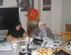

پذيرش > تریبون > گزارش كمپين > كمپين يك ميليون امضا راهي براي سازماندهي نيروهاي اجتماعي
 الهه كولايي: الهه كولايي:

 كمپين يك ميليون امضا راهي براي سازماندهي نيروهاي اجتماعي كمپين يك ميليون امضا راهي براي سازماندهي نيروهاي اجتماعي
24 آبان 1385 - - نسخه قابل چاپ
«كمپين يك ميليون امضا براي تغيير قوانين تبعيض آميز» مي تواند نيروهاي اجتماعي را سازماندهي كرده و برنامه هاي منسجم و تقاضاهاي قابل پيگيري را ايجاد كند.
الهه كولايي، استاد دانشگاه و نماينده مجلس ششم با بيان اين مطلب گفت: «مسئله اي كه در جامعه ما و جوامع مشابه خودمان داريم اين است كه اين تقاضاها سازماندهي نمي شود و سيال ، پراكنده و فاقد انسجام است. بنابراين در سطح جامعه مدني يا سطح فعاليت هاي سياسي هر نوع انسجام يعني آگاهي كه به دنبال خودش انتظارات را افزايش دهد و آنها را سازماندهي كند اهميت دارد.»
كولايي كه در نشست «بررسي كنوانسيون منع هرگونه تبعيض عليه زنان» به ميزباني يونيسف سخن مي گفت. ادامه داد :« حركتي كه تحت عنوان كمپين يك ميليون امضا در حال انجام است، فوق العاده كار موثري است و مي تواند از پراكنده شدن نيروهاي اجتماعي جلوگير كند.»
وي در رابطه با ايجاد انسجام بين نيروهاي اجتماعي چه در سطح جامعه مدني و چه در سطح جامعه سياسي، گفت: « اينها هر كدام برد خودش را دارند و فعاليت خودشان را مي كنند. ولي هر دو تكميل كننده همديگر هستند و بدون ترديد مشاركت اجتماعي در سطوح مختلف ، استفاده از فرصت هايي كه در برخي مقاطع تاريخي فراهم مي شود مي تواند جامعه سياسي را به جامعه مدني پيوند دهد. »
نماينده مجلس ششم اين نوع حركت ها را تكميل كننده تلاش هاي فعالان سياسي در حوزه زنان عنوان كرد و از آن به عنوان يك «فرصت» ياد كرد.
اين سخنان درپاسخ به سوال يكي از اعضاي كمپين يك ميليون امضا مطرح شد. مريم حسين خواه از الهه كولايي و فاطمه راكعي سخنرانان اين نشست پرسيد: «حركت هاي مردمي كه از سوي فعالان حوزه زنان شروع شده و حركت هايي كه در بالاي هرم جامعه و از سوي فعالان سياسي انجام مي شود ، چطور مي توانند در عين اينكه هر كدام شيوه هاي خود را دارند، به هم كمك كنند و به تحقق برابري حقوقي در حوزه زنان منجر شود.؟»
او قبل از طرح اين پرسش توضيحات مختصري را راجع به كمپين ارائه داد و گفت: «چند ماهي است كه تعدادي از گروه هاي مختلف زنان و فعالان مستقل اين حوزه با اعتقاد به اينكه تغييرات بايد از پايين شروع شود، حركتي را با نام «كمپين يك ميليون امضا براي تغيير قوانين تبعيض آميز» شروع كرده اند و مي خواهند به جاي اينكه تلاش ها فقط از سوي نخبگان و فعالان اجتماعي – سياسي انجام شود، خود مردم را وارد صحنه كنند.»
حسين خواه با اشاره به اينكه خواسته اين كمپين رفع نابرابري هاي حقوقي در حوزه زنان است، ادامه داد: « چشم اندازي كه براي اين كمپين پيش بيني شده يك برنامه بلند مدت چند ساله است كه هدف فاز اول آن بردن اين خواسته ميان مردم و طرح مداوم مسئله رفع تبعيض هاي حقوقي در لايه هاي مختلف جامعه است.»
او برگزاري كارگاه هاي آموزشي، سمينار ، طرح موضوع در رسانه ها و مهمتر از همه اينها با ارتباط چهره به چهره با مردم كوچه و خيابان راه هاي پيگير اين هدف عنوان كرد و افزود: « اعضاي كمپين در اتوبوس ، دانشگاه، مهماني، باشگاه هاي ورزشي، اريشگاه ها و هرجايي كه بشود با آدم ها حرف زد ، كتابچه هاي حقوقي را كه تهيه شده و نابرابري ها و تاثير قانون بر زندگي زنان را شرح داده به مردم مي دهند و از آنها مي خواهند بيانيه كمپين را امضا كنند.»
به گفته اين عضو كمپين افرادي كه مايل به جمع آوري امضا باشند با شركت در يك كارگاه آموزشي 4 ساعته كارشان را شروع مي كنند و در حقيقت هر روز آدم هاي تازه اي به كمپين اضافه مي شود.
حسين خواه، با تاكيد بر اينكه كمپين خواسته هاي خود را به يك يا چند مورد از نابرابري هاي حقوقي محدود نكرده است، اضافه كرد: «زناني كه هسته اوليه كميپن را تشكيل دادند، تصميم گرفتند خواسته هايشان را به صورت حداكثري و با تاكيد بر رفع همه نابرابري ها مطرح كنند و اگر شرايط براي تغيير همه جانبه اين قوانين فراهم نبود. برمبناي اولويت هايي كه زنان امضا كننده بيانيه مشخص كرده اند، لايحه هايي را همراه با يك ميليون امضا تقديم نهادهاي قانونگذار كنند و تغيير اين قوانين را خواستار شوند.»
او تاكيد كرد:«كمپين يك ميليون امضا تجربه زنده زنان ايراني است كه مي خواهند خواست هايي را كه به نوعي در كنوانسيون رفع تبعيض از زنان نيز طرح شده بود، با روشي مردمي و از بطن جامعه مطرح كنند.»
فاطمه راكعي، نماينده مجلس ششم نيز با بيان اينكه اين نوع حركت ها را تاييد مي كند، پيشنهاد داد اعضاي كمپين يك ميليون امضا خواسته هاي حداقلي را مدنظر قرار دهند وبه خواسته هايي كه موافقان بيشتري دارند بپردازند.
راكعي گفت:«الان فضايي است كه انگار همه تلاش هاي يكصدساله زنان ايران براي رسيدن به آزادي ها و حقوق برحق خودشان در حال رسيدن به بن است و برگشته ايم سر جاي اول خودمان و فضا طوري نيست كه خواهان برابري كامل و همه جانبه باشيم و بخواهيم آن را به مجلس يا دولت ارائه كنيم »
راكعي با اشاره به اينكه متاسفانه اين روزها از هر روشي براي تخريب استفاده مي شود، ادامه داد:« فكر مي كنيد حتي اگر خواسته هاي يك ميليوني را هم به آدمهايي كه به حداقل ها هم به هيچ وجه رضايت نمي دهند ارائه بكنيم چه واكنشي نشان مي دهند؟ مگر آنكه جامعه زنان ايران كه نصف جمعيت را تشكيل مي دهند اينقدر آگاه باشند كه اگر آنها خواستند در برابر اين خواسته ها واكنش و جوسازي ايجاد كنند بدانند كه زنان به صورت متحد موضع دارند.»
اين نشست چهارشنبه 24 آبان ماه در دفتر يونيسف تهران برگزار شد و طي آن دكتر الهه كولايي و فاطمه راكعي، نمايندگان پيشين مجلس شوراي اسلامي و شادي صدر از فعالان جنبش زنان در مورد گذشته اين كنوانسيون در ايران و تلاش هاي انجام شده در مجلس شوراي اسلامي براي تصويب آن، چشم انداز آينده اين كنوانسيون در ايران و جايگزين هاي اين كنوانسيون سخن گفتند.
ارسال به
بالاترین
،
توییتر
،
فریندفید
،
فیسبوک
در همين بخش :
 دهمین دورۀ مراسم تندیس صدیقه دولت آبادی ۱۳۹۲ دهمین دورۀ مراسم تندیس صدیقه دولت آبادی ۱۳۹۲
کارت پستالهایی به بهانهی هشت مارس و به یاد همهی مبارزین راه برابری
بیانیه بیش از 350 تن از مدافعان حقوق زنان به مناسبت روز جهانی زن؛ زنان هر روز فرودستتر میشوند
لباسی که برای تن ما دوخته اند! /اعظم بهرامی
چالشها و چشمانداز فعالیت مدنی زنان
ديگر بخش ها :
طرح یک میلیون امضا
|
مقالات
|
سایت نوشته ها
|
اخبار
|
گزارش كمپين
|
گفت و گو
|
علیه سکوت
|
كوچه به كوچه
|
نامه های شما
|
گزارش ویژه
|
گفتگو با اعضا
|
ویژه سالگرد کمپین
|
تصویر برابری
|
دل آرام علی
|
تریبون
|
مقالات
|
تاریخ شفاهی
|
خارج از چارچوب
|
کتابخانه
|
درباره کمپین
|
کمپین در شهرها
|
کمپین در بند
|
صدای تغییر
|
ویژه 22 خرداد
|
لایحه حمایت از خانواده
|
گالری
|
عشا مومنی
|
امیر یعقوبعلی
|
خدیجه مقدم
|
راحله عسگری زاده و نسیم خسروی
|
پروین اردلان،جلوه جواهری، مریم حسین خواه، ناهید کشاورز
|
زینب پیغمبرزاده
|
سعیده امین، سارا ایمانیان، محبوبه حسین زاده، ناهید کشاورز و همایون نامی
|
احترام شادفر
|
نسیم سرابندی زاده،فاطمه دهدشتی
|
وبلاگ مهمان
|
پرونده خرم آباد
|
دستگیری ها
|
مریم مالک
|
پرستو اللهیاری
|
مهرنوش اعتمادی
|
سمیه رشیدی
|
Other Languages
|
همراهان
|
«فراخوان کمپین ده روز با بهاره هدایت»
| English
|